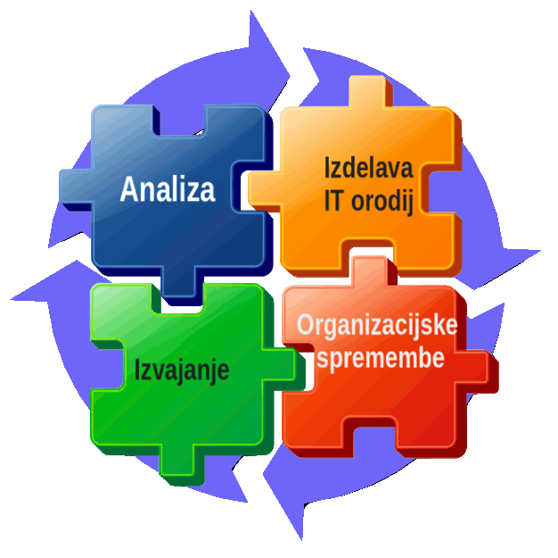

Projekt EVIP
(Evidenca vhodne in izhodne pošte)
mag. Petra Čas (Predsednica Okrožnega sodišča v Slovenj Gradcu)
Tomaž Tomšič (vodja projekta eVložišče)
mag. Jože Rihtaršič (tehnični vodja projekta eVložišče)
Specializacijo in delitvijo dela lahko povečamo učinkovitost proizvodnih procesov.
Stalno izboljševanje poslovnih procesov



ročno evidentiranje
- vpisovanje v obrazce Pošte
- vpisovanje v preglednice
- namenske aplikacije
- predaja pošiljk Pošti brez popisa
EVIP omogoča:
- centralizirano evidenco pošiljk
- pregled nad pošiljkami
- pregled nad stroški
- enotno delovno okolje za odpravo iz različnih vpisnikov
Določanje pošiljk
Odprema pošiljk
Vročanje pošiljk
Povratnice


Izbira naslovnika
Izbira načina vročitve
| Postopek vročitve / način odpreme | Lokalna odprema | Poštna cesta | e-vročanje |
| Navadno (C5 – bela kuverta) | ✓ | ✓ | ✓(email) |
| Priporočeno (C5 – bela kuverta) | ✓ | o | |
| Priporočeno - tujina (C5 – bela kuverta) | ✓ | ||
| OBR. SR. 38 | ✓ | ||
| OBR. SR. 39 | ✓ | ||
| Obrazec za K-vpisnik | ✓ | ||
| Slovenija CN 07 | ✓ | ||
| tujina CN 07 | ✓ | ||
| ZPP navadno | ✓ | ✓ | |
| ZPP osebno | ✓ | ✓ | ✓ SVEV |
| ZKP navadno | ✓ | ||
| ZKP osebno | ✓ | ||
| ZUP | ✓ | o | |
| Stroški | 2,5911 | 2,4290 | 0,6100 |
| Prihranek | / | 0,16213 | 1,98113 |
- Poštna cesta: tiskanje pisanj, kuveritranje in odprema pri zunanjem izvajalcu;
- Elektronsko vročanje: elektronsko vročanje pdf vsebin.


| Klasično vročanje | |
 | Elektronsko vročanje |
- Sortiranje povratnic (Tip povratnice in datum vročitve/prvega obvestila)
- Skeniranje povratnic
- Validacija podatkov na povratnicah
Odprema pisanj z EVIP
Kako smo v sodelovanju s CIF izvedli prenovo procesov dela pri odpremi pisanj v Slovenj Gradcu
mag. Petra Čas, Predsednica Okrožnega sodišča v Slovenj Gradcu